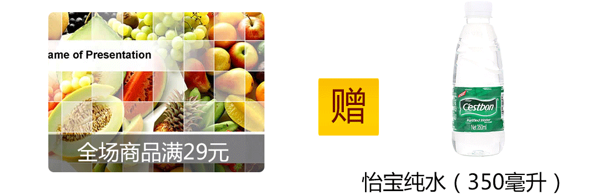
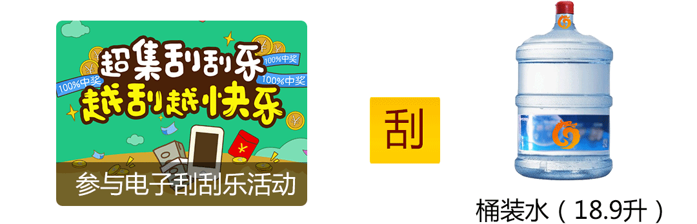
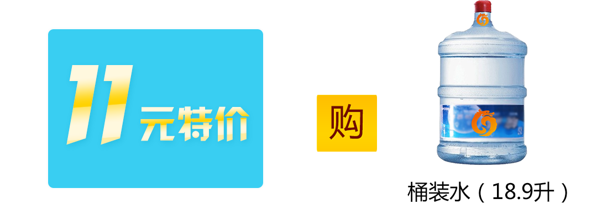

-
3月22日是一年一度的“世界水日”。长期以来，船友面临“饮水，用水难”的问题，不得不用江水维系日常的生产生活
现在船友饮水方式：
-
一是：采购饮用水。船民每次靠岸采集一定量的饮用水，但采购有限，并不能维持长时间的用水需求；
-
二是：明矾净水。明矾净水是民间常用的方法，但明矾只有吸附杂质的作用，没有过滤细菌、毒素的作用，并且明矾本身有一定的毒性，长期使用会对身体健康产生危害。
-
三是：净水器净化。饮水净化器一是价格昂贵，二是对于江水的净化效果难以达到饮用级别。
建议船友尽量通过采购饮用水的方式满足日常用水需求，多喝开水，不饮隔夜水。
长江汇将长期和船友一起关注健康饮水问题，更多活动敬请期待……
健康活动一
健康活动二
健康活动三
- 1. 所有参与活动的用户，须下载注册成为“长江汇”会员；
- 2. APP线上下单，每笔满29元订单送怡宝（350ml）一瓶；
- 3. 怡宝（350ml）赠品以实际库存为主，赠完为止；
- 4. 刮刮乐刮取桶装水遵循刮刮乐活动规则；
- 5. 特价购桶装水每船限购5桶，超过5桶可原价20元线下购买；
- 6. 活动的最终解释权南京长江船服电子商务有限公司所有。